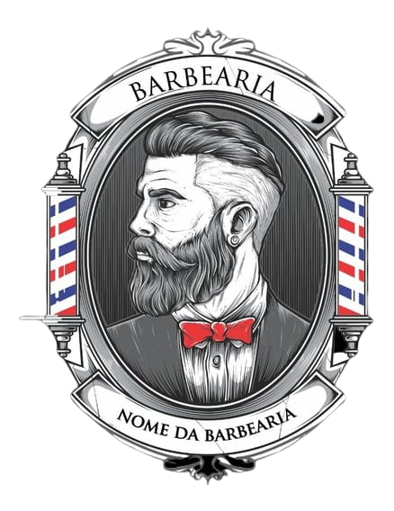

Abrir Barbearia da Faculdade em uma nova abaLanding page
Barbearia da Faculdade
Página institucional da Barbearia Cruzeiro, com apresentação dos serviços e convite para agendamento. Projeto da faculdade.
Abrir projeto (abre em nova aba)